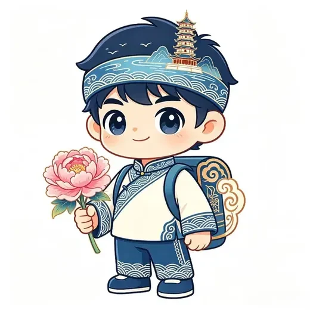

Where we come from
We are the Fuyang team of USTB’s Anhui winter outreach delegation. Our name plays on a Chinese phrase for heading home. For us, home is Fuyang.
Meet the teamBack to FuyangWe grew up in and around Fuyang. Now we study at the University of Science and Technology Beijing. Each winter, we bring what we have learned back to the high school students who are choosing their next step.
About the teamWe are the Fuyang team of USTB’s Anhui winter outreach delegation. Our name plays on a Chinese phrase for heading home. For us, home is Fuyang.
Meet the team
Our members study materials, mechanical engineering, economics, management and languages. When a question falls outside our own field, we take it to someone who studies it.
Explore majorsWe visit schools, answer questions and share our notes for free. Our guides are written for students and families preparing for the next round of applications.
Browse resourcesA score is useful only in context. Check where it places you in the provincial distribution, compare past USTB admissions, then read the plan and subject requirements for your year.
Read the Anhui guideFind your score in the distribution published by the Anhui education examinations authority. Write down the corresponding provincial rank.
Open the guideLook at more than one year. A past admission score tells you what happened that year. Changes in the exam, quotas and demand can move the cutoff.
Historical admissions (in Chinese)Confirm that the major is offered in Anhui this year. Check places, admission groups and required subjects in the current university and provincial notices.
Provincial plans (in Chinese)Bring two majors you are considering. We can help you compare courses and lab work, then talk through the things a prospectus rarely shows: where students study, eat and unwind.
Student questions
Put two course lists side by side. Ask a student what a typical assignment looks like, which labs they use and what surprised them in the first semester.
Compare majors
A useful question starts small. Ask where students revise between classes, how they find a sports club or what they wish they had packed for their first week.
Campus life guide
The team’s campus album follows the ginkgos from the bronze ding to the canopy overhead. These are the views we take back to Fuyang.
Open the albumOur outreach covers high schools in Fuyang and the surrounding counties. Dates, schools and sessions will appear on the team noticeboard once confirmed.
Team noticesWe give classroom talks and hold dedicated sessions. Teachers and schools can check the team contact page for the latest coordination channels.
Contact informationOur online Q&A channel is being prepared. In the meantime, browse the published answers. For an admissions question, have your province, grade, subjects and rank ready.
Read the FAQHuaihuai carries two bowls of Fuyang noodles. Huihui wears a headband inspired by Wenfeng Pagoda and holds a peony. Look for them in our outreach materials.
Meet the mascots